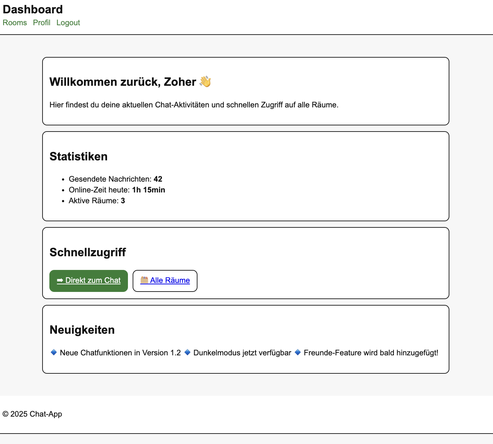

Beschreibung der Aufgabe
In Aufgabe 4 wurde die bisherige HTML-Struktur aus Aufgabe 3 auf ein Template-System mit Handlebars übertragen. Dabei wurden Layouts, Views, Partials und dynamische Render-Funktionen in Express umgesetzt.
Links zu den gerenderten Screens
Diese Links zeigen auf die gerenderten Handlebars-Seiten:
dashboard
